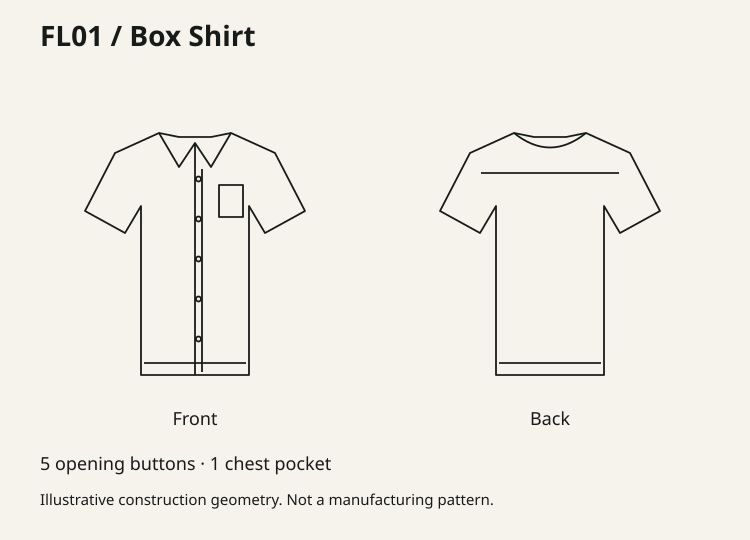

Useful shape.
Clear choices.
A clothing identity drawn from the way pieces come together.
Ink / 161A18Citrine / D8F16AOlive / 3C4A3EStone / D8DDD3
A controlled cut
One offset terminal becomes the label mark. The rest stays whole.
The construction vocabulary

Solid edge. Limited dash. Alignment tick.
Explanatory geometry, never a cutting template.